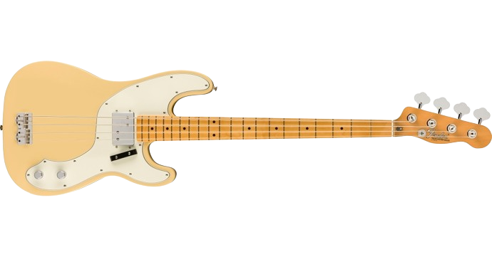

Algo de historia
El Fender Telecaster Bass es un modelo de bajo lanzado por la compañía de instrumentos musicales Fender en 1968.Originalmente producido como un relanzamiento de la versión original del Fender Precision Bass, el bajo fue remodelado en 1971 con algunos cambios, continuándose hasta 1979. Clarence Leonidas Fender (Anaheim, 10 de agosto de 1909 - Fullerton, 21 de marzo de 1991) fue un inventor y lutier estadounidense que fundó la compañía de fabricación de instrumentos eléctricos Fender (o Fender Electric Instrument Manufacturing Company), hoy conocida como Fender Musical Instruments Corporation, y más tarde, la compañía G&L Musical Products (G&L Guitars). Sus guitarras eléctricas, bajos y amplificadores diseñados desde 1950 continúan dominando la música popular más de medio siglo después.
